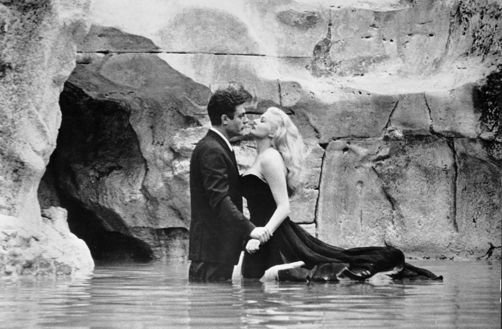
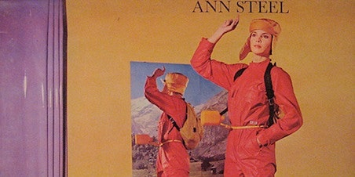
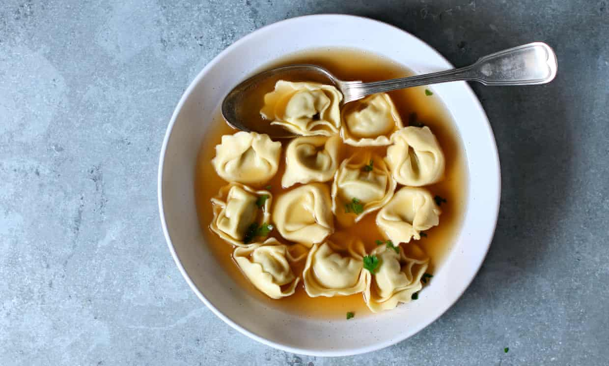

See
Fellini 100
On the 20th January 1920, in the Italian town of Rimini, Federico Fellini was born. He went on to influence film forever through his often autobiographical works, in which his own oneiric world and vivid, restless imagination are unleashed with cinematic splendour. To celebrate his 100th birthday, Mubi presents a small retrospective of the maestro’s most admired and beloved works.
 Watch Mubi's Fellini 100 season'Listen
Roberto Cacciapaglia - The Ann Steel Album
"Italian electronic composer Roberto Cacciapaglia's one-off collaboration with Michigan singer Ann Steel funnels avant-garde influences into a robust future-pop sound. Since its 1979 release, the album's reputation has grown to something approximating cult-classic status." - Pitchfork
 Listen to The Ann Steel album on YouTubeTaste
Italy in a Bowl
"From bigoli with anchovies and onions to a courgette carbonara that includes the flowers, there are fantastic dishes here for every taste" - interviews with 10 chefs by Leah Harper, for The Guardian
 10 pasta recipes